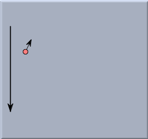
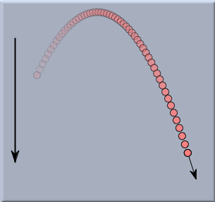
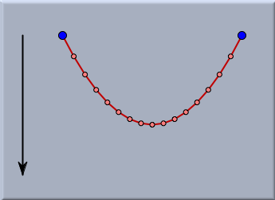
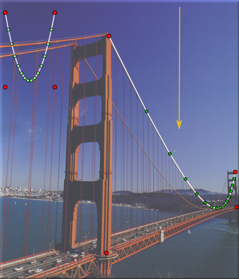
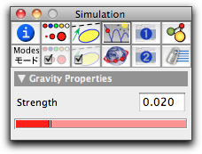

Gravity

| force = gravityconstant ∗ mass |
Gravity also has a direction toward which a mass-object is drawn. In Cinderella you create a gravitational force by a press/drag/release cycle similar to that for creating a line in Add a Line mode. The gravitational force field is represented by a black arrow that points in the direction of the force. The longer the arrow, the stronger the gravitational force.
The following pictures demonstrate how gravity acts on a mass with nonzero initial Velocity. The first picture shows the situation before the simulation is started. The second picture shows a trace of the mass-object during the simulation: a ballistic parabola.
 |  |
||
| A mass-object with nonzero initial velocity before start | Trace of the mass-object under the influence of gravity |
As a second example we consider the action of gravity on a string of masses connected by Rubber Bands, whose endpoints are pinned to fixed positions in the drawing. Without a change in the default settings of CindyLab, the system would oscillate wildly. However, if we add some friction to the Environment, the system will enter a state of equilibrium after some time. In this equilibrium situation the chain of masses forms a perfect parabola.
 |
| A chain of mass-objects under the influence of gravity |
The picture below shows an even more sophisticated example. Here a background image of the Golden Gate Bridge has been loaded. The upper left part of the picture shows a physics simulation of a rubber-band chain under the influence of gravity. A Projective Transformation has been used to map the simulated situation to a rectangular frame on the Golden Gate Bridge. Adjusting the gravitational force to the correct value shows that this situation exactly resembles the situation on the supporting cables of the bridge.
 |
| An analysis of the Golden Gate Bridge |
Inspecting Gravity
A CindyLab gravitational field is equipped with a built-in scaling factor that is set to a relatively small value. The actual value of the gravityconstant is calculated as this factor times the length of the gravity arrow in the drawing.
 |
| The gravity inspector |
Gravity and CindyScript
Like any CindyLab object, a gravitational force provides several fields that can be read and very often set by CindyScript. The following list shows the accessible fields for gravity:
| Name | Writeable | Type | Purpose |
strength | yes | real | a handle to the scaling factor |
potential | no | real | the overall potential energy of masses in the gravitational field, defined only up to an additive constant that depends on the choice of coordinates |
pe | no | real | the overall potential energy of mass objects in the gravitational field, defined only up to an additive constant that depends on the choice of coordinates |
simulate | yes | bool | turn on/off simulation for the gravitational field |
Page last modified on Friday 26 of August, 2011 [15:22:51 UTC].
The original document is available at
http://doc.cinderella.de/tiki-index.php?page=Gravity